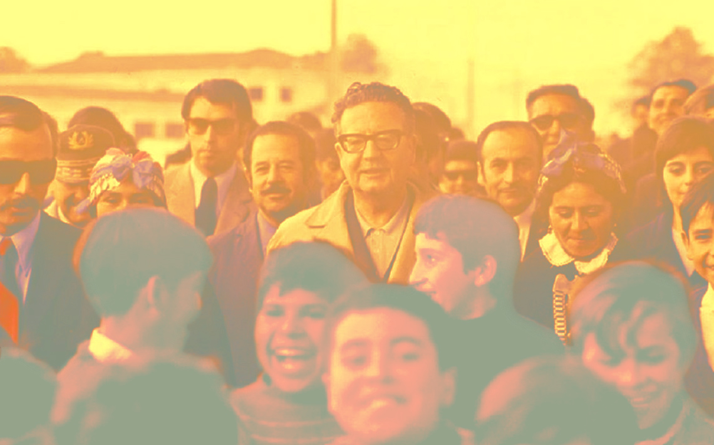

Salvador Allende
Presidente de Chile 1970-1973

Salvador Allende Gossens (1908-1973) fue un médico y político chileno que alcanzó la presidencia de Chile entre el 4 de noviembre de 1970 y el día de su muerte, el 11 de septiembre de 1973.
Cronología de Salvador Allende
1970-1973 Gobierno de la Unidad Popular
“Estas son mis últimas palabras y tengo la certeza de que mi sacrificio no será en vano, tengo la certeza de que por lo menos será una lección moral que castigará la felonía, la cobardía y la traición”.